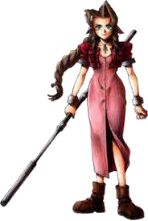

Aerith Gainsborough (Japanese: エアリス・ゲインズブール, Hepburn:
Earisu Geinzubūru), transliterated as Aeris Gainsborough in the
English releases of Final Fantasy VII and Final Fantasy Tactics—is a
player character in Square's (now Square Enix) role-playing video
game Final Fantasy VII. She was designed by Tetsuya Nomura with
influence from Yoshinori Kitase, Hironobu Sakaguchi and Yoshitaka
Amano.